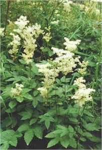
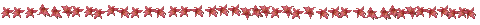

Meadowsweet

Meadowsweet, a magical herb, smelling of Mimosa, related to Spirea and a member the Rose Family. It was used together with Oak and Broom by Gwydion and Math in the creation of Bloddeuedd (Flower-formed), as wife for Llew Llaw Gyffes. The story is to be found in The Mabinogion.

The Castle
Brigid's Garden
Moyra's Web Jewels